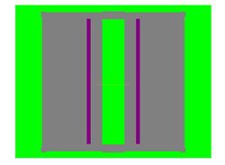
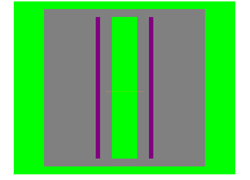
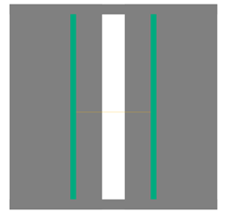
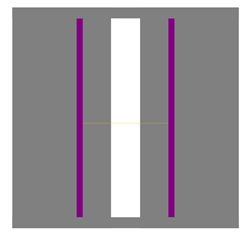
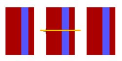
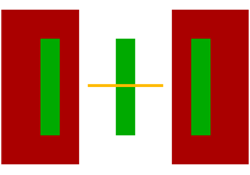
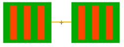
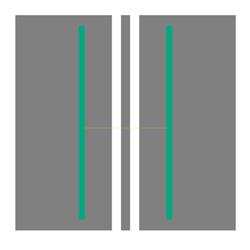

Calibre Pattern Generator Topo Modeling Test Patterns
The Calibre Pattern Generator has built-in test patterns useful for modeling the effects of underlying topography on the lithography process. For additional information on Topo-specific test patterns, see “Topo Test Pattern User’s Guide” in the Calibre® WORKbench Topography Modeling User’s and Reference Manual.
3rx_rect
Vertical 3-bar active pattern.
Property Descriptions c — Count or number of 3-bar sets h — Vertical height of bars p — Horizontal pitch of 3-bar sets s_rx — Horizontal space width between bars w — Horizontal width of bars x — Center x-coordinate for pattern y — Center y-coordinate for pattern Gauge Descriptions Gauge_0 — Horizontal width of center bar in first 3-bar set |
ACinfluence
Active topography influence on implant space pattern.
 |
Property Descriptions gh — Vertical height of gate lines gsy — Vertical shift of gate lines gw — Horizontal width of gate lines h — Vertical height of active rectangle hih — Vertical height of implant area above and below active space in center hiw — Vertical shift of upper implant serifs and jog ih — Vertical height of implant pattern imch — Vertical height added implant area above and below active space in center imq — Horizontal and vertical height of serifs on implant corners imqs — Horizontal and vertical extension of serifs from implant corners isx — Horizontal distance implant pattern starts from left and right edges of active rectangle isy — Vertical distance implant pattern starts from top and bottom edges of active rectangle iw — Horizontal width of implant to left and right of active space in center w — Horizontal width of active wd — Walking distance offset of gate lines from active space in center x — Horizontal shift of all patterns y — Vertical shift of all patterns Gauge Descriptions Gauge_0 — Horizontal width of active space in center Gauge_1 — Horizontal width outside of pattern |
MC
Models influence of gate topography on implant line.
Property Descriptions c — Count or number of implant-poly sets ih — Vertical height of implant line iw — Horizontal width of implant line p — Horizontal pitch of implant-poly sets ph — Vertical height of poly line pw — Horizontal width of poly line wd — Walking distance offset of poly lines from implant line x — Center x-coordinate for pattern y — Center y-coordinate for pattern Gauge Descriptions Gauge_0 — Horizontal width of center implant line |
PointfAC_Space
Implant space over active pad with two gate lines.
 |
Property Descriptions gh — Vertical height of gate lines gsx — Horizontal shift of gate lines gsy — Vertical shift of gate lines gw — Horizontal width of gate lines h — Vertical height of active rectangle hih — Vertical height of implant area above and below active space in center hiw — Vertical shift of upper implant serifs and jog ih — Vertical height of implant pattern isx — Horizontal distance implant pattern starts from left and right edges of active rectangle isy — Vertical distance implant pattern starts from top and bottom edges of active rectangle iw — Horizontal width of implant rectangles to left and right of active space in center w — Horizontal width of active wd — Walking distance offset of gate lines from active space in center x — Horizontal shift of all patterns y — Vertical shift of all patterns Gauge Descriptions Gauge_0 — Horizontal width of active space in center |
PointfACInfluence
Implant space over two active lines.
 |
Property Descriptions gh — Vertical height of active lines gsy — Vertical shift of active lines gw — Horizontal width of active lines hih — Vertical height of implant area above and below space in center ih — Vertical height of implant pattern isy — Vertical shift of implant pattern iw — Horizontal width of implant rectangles to left and right of active space in center wd — Walking distance offset of gate lines from active space in center x — Horizontal shift of all patterns y — Vertical shift of all patterns Gauge Descriptions Gauge_0 — Horizontal width of space in center bar |
PointfSTI_Space
Implant space with two gate lines.
 |
Property Descriptions gh — Vertical height of gate lines gsy — Vertical shift of gate lines gw — Horizontal width of gate lines hih — Vertical height of implant area above and below space in center ih — Vertical height of implant pattern isx — Horizontal distance implant pattern starts from left and right edges of active rectangle isy — Vertical shift of implant pattern iw — Horizontal width of implant to left and right of active space in center w — Horizontal width of active wd — Walking distance offset of gate lines from active space in center x — Horizontal shift of all patterns y — Vertical shift of all patterns Gauge Descriptions Gauge_0 — Horizontal width of space in center bar |
SpaceSTI
Implant space with no additional topography.
 |
Property Descriptions hih — Vertical height of implant area above and below space in center ih — Vertical height of implant pattern isx — Horizontal distance implant pattern starts from left and right edges of active rectangle isy — Vertical shift of implant pattern iw — Horizontal width of implant to left and right of active space in center wd — Walking distance offset of gate lines from active space in center x — Horizontal shift of all patterns y — Vertical shift of all patterns Gauge Descriptions Gauge_0 — Horizontal width of space in center bar |
WB
Implant line with poly line.
 |
Property Descriptions c — Count or number of implant-poly sets ih — Vertical height of implant line iw — Horizontal width of implant line p — Horizontal pitch of implant-poly sets ph — Vertical height of poly line pw — Horizontal width of poly line wd — Walking distance offset of poly lines from right edge of implant line x — Center x-coordinate for pattern y — Center y-coordinate for pattern Gauge Descriptions Gauge_0 — Horizontal width of center implant line |
inv_iso_3rx_rect
Two implant lines with 3 active lines.
 |
Property Descriptions c — Count or number of active 3-bar sets h — Vertical height of active bars ih — Vertical height of implant rectangles iw — Horizontal width of implant rectangles p — Horizontal pitch of active 3-bar sets s_rx — Horizontal space width between implant rectangles w — Horizontal width of active bars x — Center x-coordinate for pattern y — Center y-coordinate for pattern Gauge Descriptions Gauge_0 — Horizontal width of center active bar in first 3-bar set |
inv_iso_rx_rect_array
Three implant lines over active pads.
 |
Property Descriptions c — Count or number of 3-bar sets h — Vertical height of bars p — Horizontal pitch of 3-bar sets s_rx — Horizontal space width between bars w — Horizontal width of bars x — Center x-coordinate for pattern y — Center y-coordinate for pattern Gauge Descriptions Gauge_0 — Horizontal width between active pads |
iso_pad_2rx_rect
One implant line between two implant pads with two active lines.
 |
Property Descriptions gh — Vertical height of active lines gsy — Vertical shift of active lines gw — Horizontal width of active lines hih — Vertical height of implant area above and below space in center ih — Vertical height of implant rectangles and center line isx — Horizontal distance implant pattern starts from left and right edges of active rectangle isy — Vertical shift of implant pattern iw — Horizontal width of implant rectangles to left and right of active space in center wd — Walking distance offset of gate lines from active space in center x — Horizontal shift of all patterns y — Vertical shift of all patterns Gauge Descriptions Gauge_0 — Horizontal width of space in center bar |
rx_rect_array
Arrays of active bars.
Property Descriptions c — Count or number of 3-bar sets h — Vertical height of bars p — Horizontal pitch of 3-bar sets s_rx — Horizontal space width between bars w — Horizontal width of bars x — Center x-coordinate for pattern y — Center y-coordinate for pattern Gauge Descriptions None. |